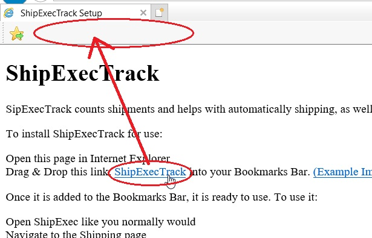

ShipExecTrack
ShipExecTrack counts shipments and helps with automatically shipping, as well as displaying shipping metrics.
To install ShipExecTrack for use:
Open this page in Internet Explorer
Drag & Drop this link: ShipExecTrack into your Bookmarks Bar. (Example Image)

Once it is added to the Bookmarks Bar, it is ready to use. To use it:
Open ShipExec like you normally would
Navigate to the Shipping page
Wait until the page is loaded
Left-Click the newly created Bookmarklet. The page should change visually if it works.
Login on the bottom-right of the page, using your Casi username.
Alternate versions:
Gaylord Station Version: ShipExecTrack
Use the button below if needed to change the domain used in the Drag & Drop Bookmarklets before you create them.